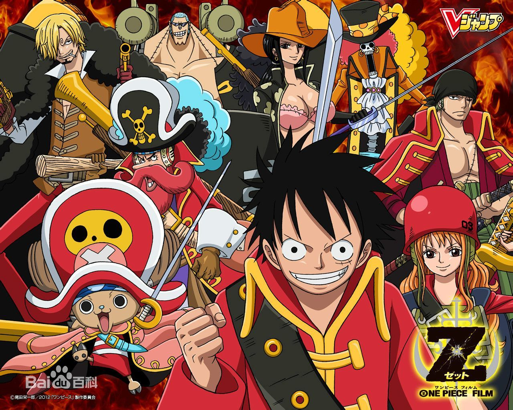

海贼王
（东映制作的动画）
《ONE PIECE》（海贼王、航海王）动画，于1999年10月20日在日本富士电视台开始播放，至今仍在播放中。中国搜狐视频网站拥有该片中国大陆地区独家版权，每周日10：00更新一集，截止至2014，点阅率已超过40亿次。
剧情简介
传奇海贼哥尔·D·罗杰在临死前曾留下关于其毕生的财富“One Piece”的消息，由此引得群雄并起，众海盗们为了这笔传说中的巨额财富展开争夺，各种势力、政权不断交替，整个世界进入了动荡混乱的“大海贼时代”。 生长在东海某小村庄的路飞受到海贼香克斯的精神指引，决定成为一名出色的海盗。为了达成这个目标，并找到万众瞩目的One Piece，路飞踏上艰苦的旅程。一路上他遇到了无数磨难，也结识了索隆、娜美、乌索普、香吉、罗宾等一众性格各异的好友。他们携手一同展开充满传奇色彩的大冒险。